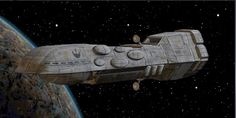
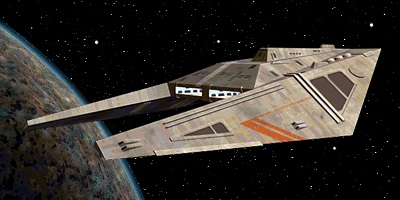
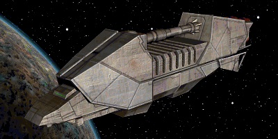
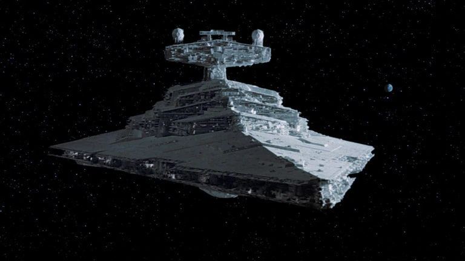
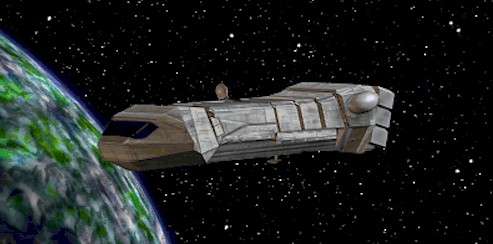

Dreadnaught-class heavy cruiser
автор: Admin | дата статьи: 25 марта 2020 г.
The Dreadnaught-class heavy cruiser, or simply the Dreadnaught, was a type of capital ship built for planetary occupation and space combat used by the Galactic Republic, Galactic Empire, New Republic, local governments, and various other organizations. It was one of the most ubiquitous ship designs in all of the galaxy.
Liberator-class cruiser
автор: Admin | дата статьи: 20 марта 2020 г.
The Liberator-class cruiser, also Liberator Cruiser, was a powerful frontline capital ship designed by the SoroSuub Corporation to combat piracy. Although slender and small in size, the cruiser boasted a formidable array of weaponry comprising more than four hundred combined turbolaser and ion cannon batteries, and could carry a complement of six starfighter squadrons and three troop regiments. Utilized by both the Sullustan Home Guard and the Rebel Alliance during the Galactic Civil War, the Liberator featured cutting-edge armor plating, shielding, and drive unit technology that made it one of the galaxy's most advanced warships.
Action VI transport
автор: Admin | дата статьи: 15 марта 2020 г.
The Action VI transport, sometimes referred to as the bulk transport and the modified action transport, was a popular freighter built by Corellian Engineering Corporation. Action VI transports typically operated in convoys or in well patrolled areas of space. Since they lacked even the most basic forms of self-defensive measures, such as armor and weaponry, they were often prime targets for pirates and so had to rely on protection from other capital ships and starfighter escorts. The only reason they were used by the Galactic Empire was because they were quite inexpensive relative to Imperial wealth. One of these ships once crashed on Blenjeel, after crossing paths with an Immobilizer 418 cruiser.
CR90 corvette
автор: Admin | дата статьи: 10 марта 2020 г.
The CR90 corvette, commonly referred to as the Corellian corvette or the Rebel blockade runner, also known as an Alderaan cruiser, was a small, multi-purpose capital ship manufactured by Corellian Engineering Corporation. The CR90 had a wide variety of users throughout the galaxy, from pirates to corporations to galactic navies, and had a known operational life from at least as early as 52 BBY to as late as 137 ABY. It possessed the same legendary adaptability as other CEC products, which allowed it to serve in roles as mundane as freight hauling or as a high-profile diplomatic escort.
Imperial I-class Star Destroyer
автор: Admin | дата статьи: 05 марта 2020 г.
The Imperial I-class Star Destroyer, also referred to as an Imperial-class Star Destroyer or Star Destroyer, was a model of Imperial-class Star Destroyer in the service of the Imperial Navy. A wedge-shaped capital ship, it bristled with weapons emplacements, assault troops, boarding craft, and TIE line starfighters. In the era of the Galactic Empire, its command bridge was staffed by the finest crewmen in the navy. At first, Star Destroyers were deployed to sectors and systems caught in the aftermath of the Clone Wars, where they would crush any signs of sedition. During the Galactic Civil War the Destroyer's role changed to hunting down high value Rebel targets and bases. They fought in notable battles such as the Battle of Hoth and the Battle of Endor. The Imperial II-class Star Destroyer was a derivative of the Imperial I-class.
Carrack-class light cruiser
автор: Admin | дата статьи: 01 марта 2020 г.
The Carrack-class light cruiser, also known as the Carrack-class gunship, was a cruiser deployed by the Republic Navy throughout the final era of the Galactic Republic and was prominent in the Clone Wars. It was later an important addition to the Imperial Navy; although 350 meters long, the small combat cruisers were heavily armed and had a top speed that matched X-wing starfighters. The Carrack-class was made as a cheap replacement for expensive capital ships and was not designed to operate as ships of the line, despite being capable of trading fire with larger adversaries.